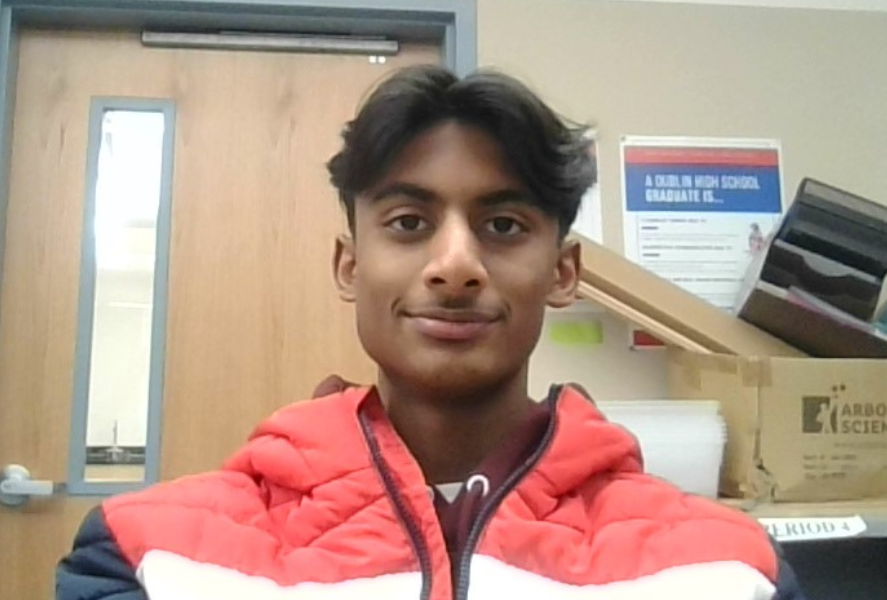

More than 1.2 million students drop out of high school. Just imagine that. Imagine the entire population of San Diego, around 1.3 million people, dropping out of high school. That’s how many people dropped out. This is not how I want to be. My goal is to graduate high school, and get into a UC to study computer science. My plan for this is to get straight A’s, get involved with clubs, and play well for the EHS soccer team. I want to get into this career as it is the same career as my parents currently.
I am ambitious. For the entirety of middle school, I got straight A’s in every single class, every semester. This was because I was ambitious for the certificate I would get at the graduation day if I got straight A’s. Additionally, I made it onto the San Ramon FC Gold team. Again, this was because I was ambitious for the goal, and trained for it. This relates to my career as the computer science and programming field is very competitive, so my ambition to reach to the top will help me succeed in my career.
Again, some of my achievements are that I got the Principal’s Honor Roll in middle school and I got into the gold soccer team in my nearby soccer team. Some other achievements I have had in my career so far is I won a chess tournament in 6th grade, and I have won many tournaments for my soccer team in the past. I have gained many experiences from my past, and some things I learned about myself is that, yes, I am ambitious, however, I tend to be quiet and nervous in serious situations. This is something that I need to work on this year and move forward in high school. To tackle this, I have applied for AP Seminar next year, a presenting class. With hard work and effort, I can take this class and learn how to effectively communicate with others.
Overall, my life has its ups and downs. I got good grades in school and I play for a good soccer team, however I still need to work on being calm and vocal in tough situations. I am passionate about the field of computer science, and I hope to succeed in my career. Thank you for reading about me, and I invite you to explore the rest of my site
